SOOTBORN
State of the Game
Since the first review SOOTBORN went from v0.24 to v0.48 in about sixteen hours. It now has three third-person levels built in the Second Chance engine, seven walk-around 2D missions, a drawn 3D Gilding, a settled canon, and a plot you have frozen. Almost every gap the first review named has been answered in the story. What it hasn't had is a full run by hand, and it now asks a player to learn three different ways of fighting.
Since the first review
Added (v0.25 to v0.48, 37 commits)
- Third-person levels: the High Docks (+7), Riser Nine (+5) and the Stair (+9), in the Second Chance engine with cel shading and a faint halftone. They play inside the game's own frame and controls: one strike button (tap light, hold for a three-blow heavy), a kick, the hook line, the boots (LIFT ZERO), memories at chalked suns, and ELEVEN as a four-stage finisher at full fury.
- The Table: the Gilding drawn as a fourteen-picture 3D comic in Pump Room Seven. No fighting.
- 2D missions: the Camp, the Island, the Lamp, the Dais and the Last Night inside the Assay; the Count hall and the Sun (you play Tavi) in Part Two. They include fetch tasks, a pipe puzzle, stealth, a traitor to find, and a night with no enemies.
- Story: Maren Aldane (Teo's sister) and the betrayal at the docks; Brand's death played as Brand; the low point; Wren's second arc; Oswin Hale and Petra Lune; seat knives; the Spire's rings; Celestine knew from the Pinning; both endings reach the last scene. The plot was frozen at v0.44.
- Combat and look: graphics presets and a frame-time readout, cel shading, rebuilt bodies for every arena fighter, three fights moved onto the painted valley, a redrawn cadet sprite with a crescent swing, four hit reactions in 2D, and tougher guards in v0.48.
- The Assay, lived in: the Proctors' ranking board, cairns, patrons' drops, wagers, grounded blades at the keep.
From the first review's list
- Fixed Mara's body, the fury smear, the stale About text and "Below the Sun" (v0.26).
- Fixed The Valley HUD: hit counter and enemy bar sit inside the frame in today's capture.
- Fixed The bible is current, with a canon sheet that settles all six timeline conflicts.
- Done Training room on the title screen; a calendar strip on every Assay card; a Memories shelf.
- Done A fall (Maren and the docks), Teo's family (Maren), choice payoffs in the last chapter, Ilse sent the leaf.
- Partly Braiding Part Two: the Sun and Tier Six Stands go back below; the rest still climbs.
- Partly A rival: Tyr Cade suspects him and Oswin becomes the Auditor's Blade, but neither is a cunning equal.
- Partly Training-year bouts: No Gloves added; still two fights in three and a half years.
- Not yet Phone frame rate. The readout exists; nobody has sent numbers back.
- Not yet A full play-through by hand. Every changelog entry since v0.25 ends "Not checked: played by hand."
Where it stands
What exists
- Part One, Below. Prologue, heist, furnace, four days in Cinderwell, with the Gilding now drawn as the Table.
- The Assay. Seven arena fights and five 2D missions, each with a calendar strip.
- Part Two, Above. Five chapters, +4 to +9. Two 2D missions, two 2D fights, four arena fights and three third-person levels. The ending is a film.
- Four ways to play: a 2D walk-around world, 2D pixel fights, arena fights (painted or full 3D), and third-person levels.
- Tools: a dev menu with 31 cutscenes, every mission and level; bots that fight the levels; graphics presets and a frame-time readout.
What that means
- The story is done. The changelog says remaining story work is reading and pacing, not new threads.
- Part Two is no longer a visual novel with fights: chapters 2, 3 and 5 now have something you walk through.
- The cost is consistency. Kael fights with 21 moves in the arena, one strike button in the levels, and a sprite blade in 2D. These are three control languages in one game.
- The newest work was tuned against a bot that never uses the hook, the kick, the jump or ELEVEN.
Frames from today's build
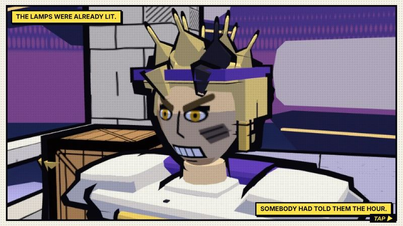
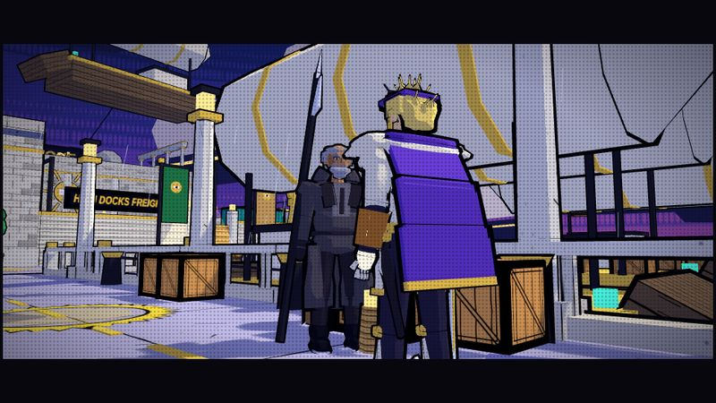
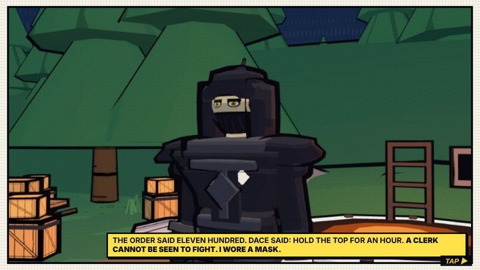
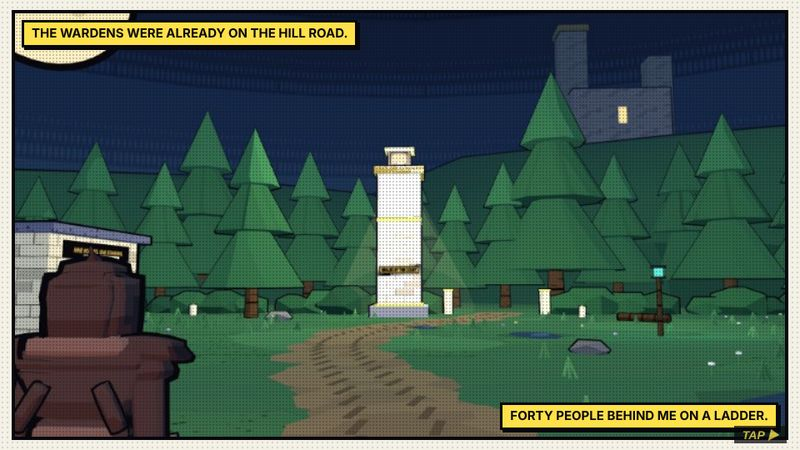
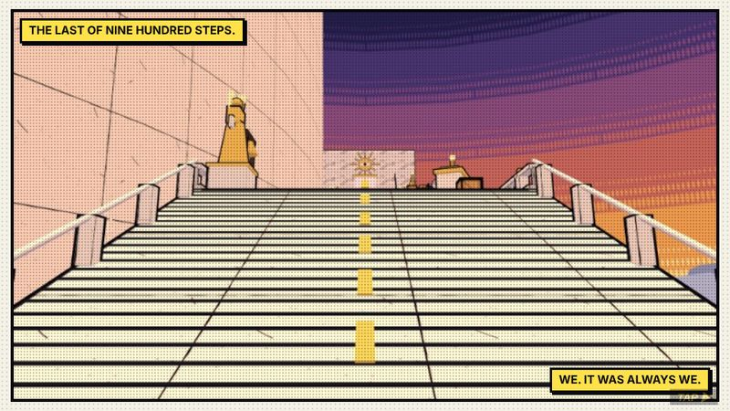
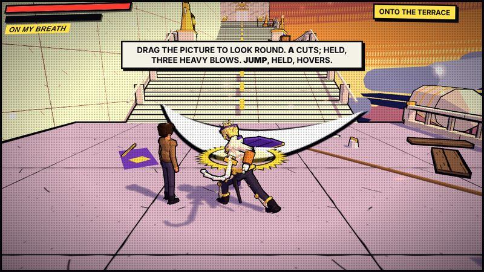
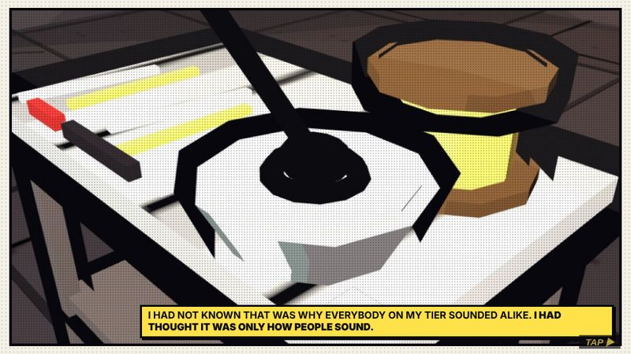
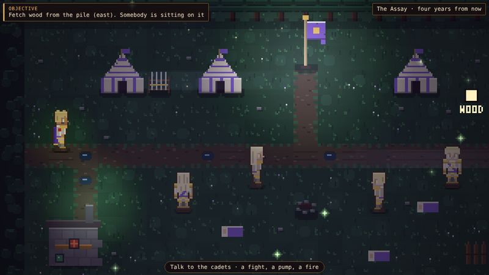
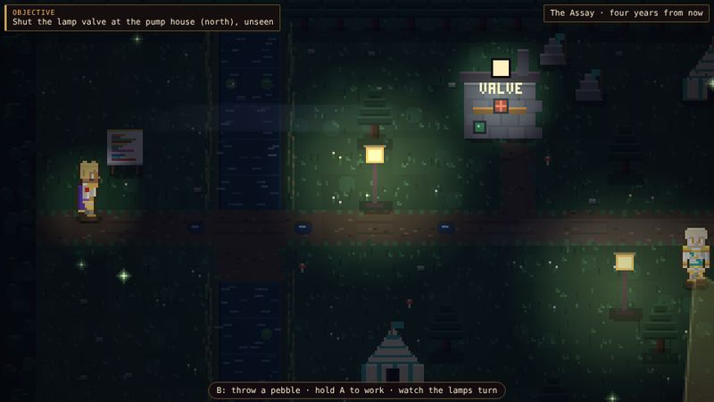
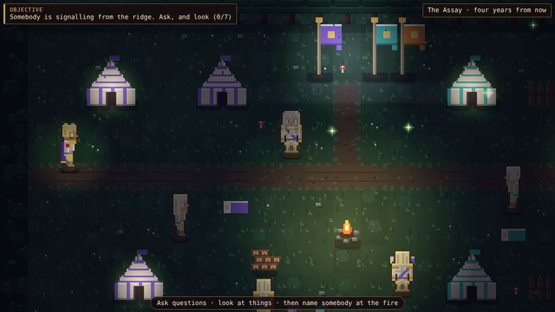
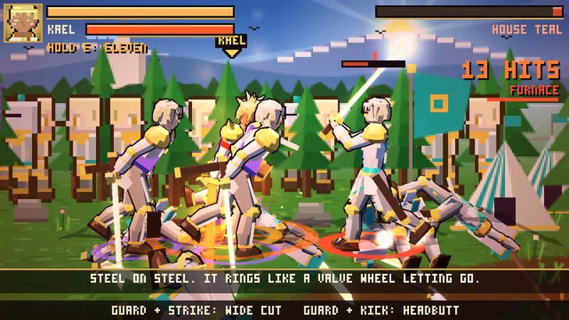
How it looked: from the first build to today
Each row is an old version checked out of the repo and run with the same script. The script takes the title, a new game, and the dev menu's Valley fight and High Docks, where the build had them. Times are Eastern. The repo starts at v0.6; v0.1 to v0.5 exist only in the changelog.
A pixel RPG below ground
The first commit in the repo. The title is a carved-stone menu over a dark tile map; the new game opens on Seren under a shaft of light, with portraits and a dialogue box.
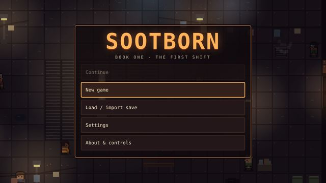
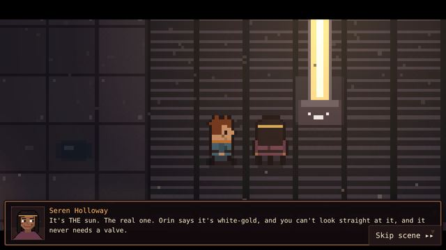
The art pass
Stone walls get texture, the floor gets grating and the light shaft gets a lamp. Same scene, more place. Day 2, the combat foundation and the cutaway map arrived twenty minutes earlier.
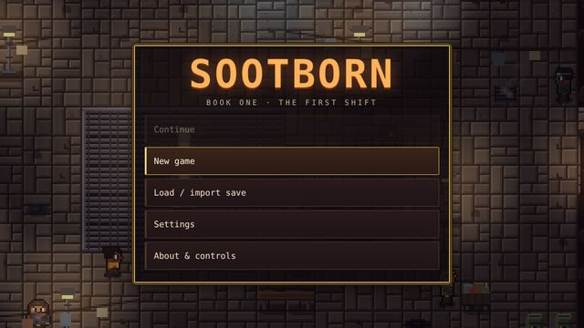
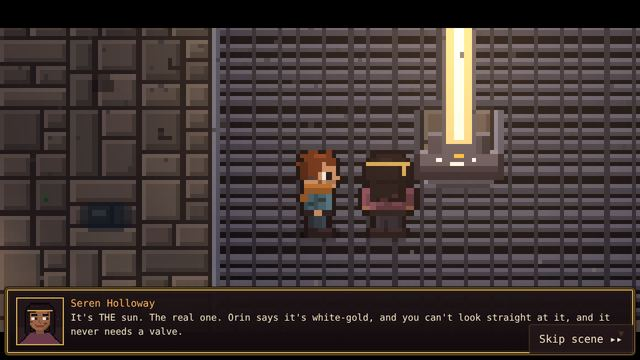
The Assay and the world panel
A new game now opens on the cutaway of Tiers 4 to 9 around the Deep Array. A film opening, save slots and a Checkpoints (dev) entry arrive. The Assay's first 3D fights land here too; in this build the dev route drops to the pixel tunnel.
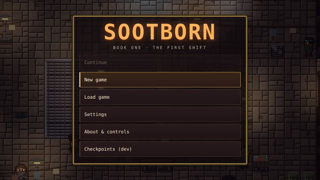
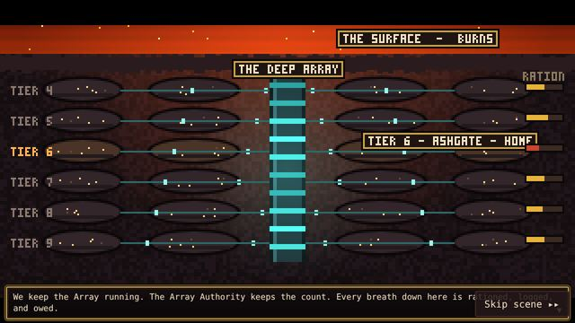
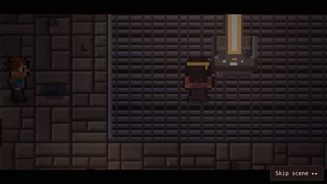
"Every breath is hers." Real 3D above ground
The tagline replaces Book One. The Valley is a full 3D battle on green grass with jointed models, lighting and a crowd. This is the chaotic group fight your v0.12 notes described.
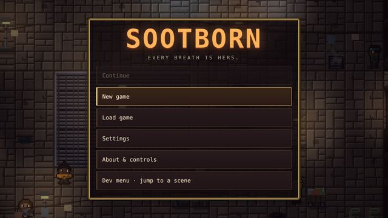
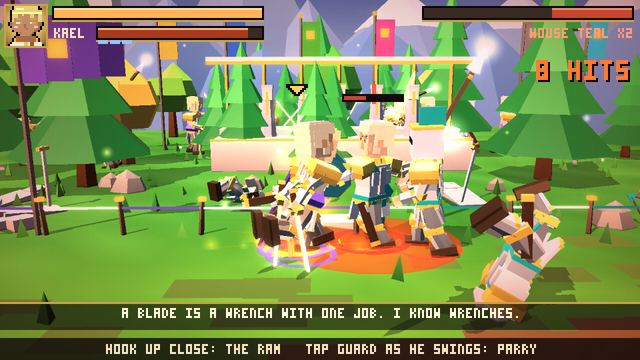
The first review's build
Forms, four finishers, fury and Memory Arts. Kael blooms gold at high fury. The 2D Drill was the fight style you said you wanted more of.
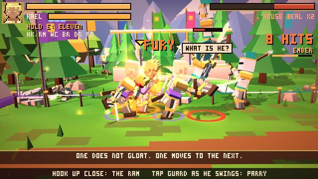
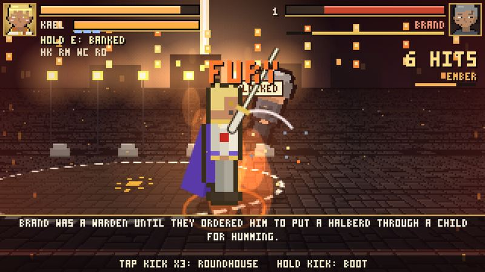
The dev menu and the High Docks
The title opens on a full dev menu: training room, fights, Assay missions, Levels in 3D, story beats and cutscenes. The High Docks appears as a third-person level with a comic title card.
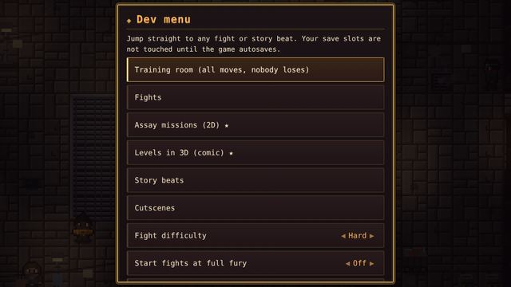
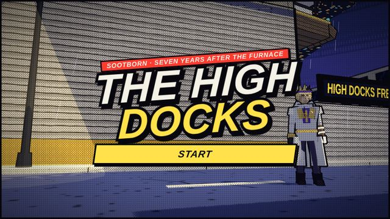
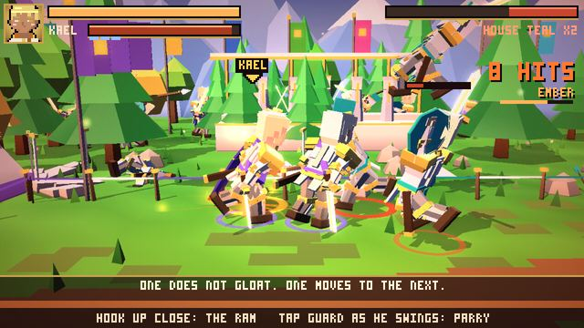
Rebuilt bodies, the painted valley
Arena fighters get new bodies and the Valley moves onto a painted backdrop with a crowd of cadets. The docks level has its inked panels and caption boxes.
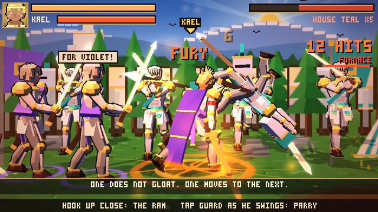
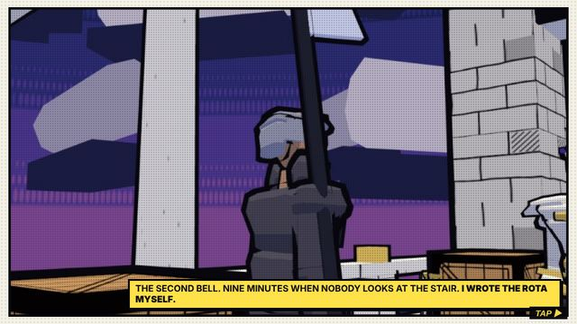
Today
Three third-person levels, the Table and seven 2D missions. See the frames above.
Before anything new: play it start to finish
No changelog entry since v0.25 records a full run by hand. Your play notes show you've tried the levels on the phone (the dots, the hook, the jarring start), and each note was fixed within the hour. But the newest versions were checked by a bot that dodges better than people, never uses the hook, the kick, the jump or ELEVEN, and can't measure a phone. One play-through on the phone with the frame-time readout on would tell you more than the next five versions.
How the story is layered
The game still tells two stories at once: Below moves a day at a time, Above arrives in dreams years ahead. Left to right is the order the player sees things; bottom to top is when they happen. New since the first review: the Table, five Assay missions, No Gloves, and play in Part Two.
Scroll sideways on a phone. Numbers match the list below. I placed each Assay mission before the fight it hands back to, going by the bible; I didn't play through to confirm the exact order.
What changed
- Part Two has ground to stand on. Riser Nine, the High Docks and the Stair sit at +5, +7 and +9, so the climb now has a played step at each rise.
- The braid comes back below twice in Part Two: Tavi chalking the sun at +5, and Mara at Tier Six.
- The Assay is walked, not only fought. Five nights on foot fill the gaps between the dated fights.
- One canon sheet now dates every event, from the wedding at −1 to Lift Zero at +9.
Where it still loses the thread
- The Assay is still shown out of order. It opens on day 40, and the arrival, the Island and the Standard all come after the Keep. The calendar strip helps, and you decided to keep the order. Play it once and see whether the Standard after the Keep still lands.
- Chapter 1 (+4) still has one fight and nothing to walk. The clerk years, the heart of the secret identity, are told.
- Chapter 4 (+7 to +9) covers two years in two 2D fights where you aren't Kael. The low point is told.
The Assay, in the order shown
Green circles are fights; diamonds are the new 2D missions.
Canon settled since the first review
| Item | Now |
|---|---|
| Length of the Assay | One season, about fifty days. "Year-long" is retired. |
| The High Docks | +7, ending chapter 3. |
| Brand | Struck Hollis at year 0, deserted within the year, trained Kael, dies on the dock stair at +7: "waiting seven years for a stair." |
| Inspector Vale | Born on Tier Four, the top of Cinderwell. Ends on a wheel on Tier Eight. |
| Celestine and Lucan | The Accredited bear late and live long. She is 70 at +6; Lucan was born when she was 50. |
| The leaf in Lift Zero | Ilse Marrin sent it. |
| What Celestine knew | She recognised him at the Pinning and let him rise as her successor (v0.44). This replaces "she finds out at +6." |
| Still open | The Warden Captain at Riser Nine has no name. |
Against Red Rising
Both run from a wife's execution to the fall of the people who ordered it. The first review found SOOTBORN missing a fall, a rival and follow-through on the boy he kills. Two of those three are now in.
| Red Rising | SOOTBORN now | Fit |
|---|---|---|
| Eo sings and is hanged | Seren takes the blame and walks into the furnace; the tier hums | Close |
| Carved into a Gold | The Table: bones, throat and eyes taken; he refuses the hands | Better |
| The Passage: he kills a boy he liked | The Pairing, and nine years of Maren Aldane, Teo's sister | Now pays off |
| The Institute | The Assay, now with ranking boards, patrons, wagers, flying Proctors, grounded blades | Very close |
| Years in the court | The Count hall, the rings, the Clerk's desk | Still compressed |
| The Iron Rain | Riser Nine, the High Docks, the Fall | More |
| Betrayal at the triumph | Maren gives the dock office the hour; Brand dies; a month on a barge | Its own |
| The feral lieutenant | Tavi at his shoulder up the Stair; Petra and Oswin in the Assay | Better, still thin |
| An equal who becomes a partner | Wren: the Island, the desk, the manifold, the rail, Row K | Slow-built |
| A cunning rival his age | Tyr Cade suspects; Oswin becomes the Auditor's Blade | Tragic, not cunning |
| The giant who holds the line | Brand on the dock stair, now played as Brand | Close, and played |
| The ruler falls | Celestine knew all along and chose him; strike her line or send her below | Its own |
Mechanics
Which systems are alive in which chapter
At v0.24, everything but fights and panels stopped after Day 2. Now walking, stealth and choices come back in the Assay and in Part Two.
Play by part of the story
Three ways Kael fights
- 2D pixel fights (Below, training, chapter 4): the sprite brawler with a redrawn cadet, a shaped blade, a crescent swing and four hit reactions.
- Arena fights (the Assay, chapters 1 to 5): 21 moves, forms, finishers, stagger, style rank. Three now sit on the painted valley.
- Third-person levels: a five-beat chain from one button, kick, hook, boots, the Turn and the Riposte, the Count, ELEVEN. Fury shows as gold on Kael.
- Each was improved today. They don't share a button map, a hook rule or a finisher, so what a player learns in one doesn't carry to the next.
Everything else
- Stealth: the heist, the Island, the Dais, the Count hall.
- Puzzles and tasks: the pipe bleed, the breaker, the Camp's pump, Riser Nine's pump and pylon, the Lamp's deduction.
- Choices: drive, the fury count, the rays, the Tier Four order, Lucan, Maren (two flags), Wren (three), the doors, the last choice. Several now land in chapter 5.
- Presentation: pixel panels, films, 3D comic panels with halftone, generated music on the shift song.
Scorecard
Succeeding
- The story is finished and consistent. One canon sheet, a frozen plot, and the first review's six conflicts settled.
- The Table. The Gilding drawn as a 3D comic with no fighting is the strongest new idea, and one of the game's best scenes.
- The third-person levels have a reason to exist. Hold, raid, ascent, each one a turn in the story, not a set piece bolted on.
- The world above is written as carefully as Cinderwell. Seat knives, the bells, "noted" as a debt, the painted line on the service stair.
- Your notes get acted on fast. The dots, the hook, the jarring start and the ELEVEN request were each answered within an hour or two.
- Process. Bots that fight whole levels, a frame-time readout, and a changelog that says plainly what wasn't checked.
Lacking
- Hand play. No full run since v0.24, and the guards were made tougher against a bot.
- One control language. Three fighting systems with different buttons and rules.
- Phone performance. The levels draw tens of thousands of triangles; Riser Nine added about 16,000 more in v0.47. Never measured.
- Dark 2D nights. Every Assay mission I captured is at night, dim green on black, with small objective text.
- Chapter 1 and chapter 4. The clerk years and the two years in the weather are still mostly told.
- Kael's model. Rounder now, but the head, hands and face are still simple; the changelog lists it as open.
- Scope. 24 versions in 16 hours across four play styles. The game is broad; it now needs to get consistent.
Known bugs and risks
| Level | Issue | Source |
|---|---|---|
| Check first | Phone frame rate in the three levels has never been measured | Changelog |
| Check first | v0.48's tougher guards were tuned against a bot that never hooks, kicks, jumps or uses ELEVEN | Changelog |
| Check first | Whether the 3D levels start inside the Claude app; the fallback is the 2D fight | Changelog |
| Visible | 2D Assay missions are very dark, and the objective text is small | Seen in capture |
| Visible | The Stair's first tutorial box covers the middle of the fight | Seen in capture |
| Visible | New Part Two scenes reuse old backdrops (the tunnel, the desk, the anteroom) | Changelog |
| Known gap | Lock-on is not on the touch pad | Changelog |
| Known gap | The hand-off between the 2D world and the arena fights hasn't been looked at | Changelog |
| Untested | Held JUMP didn't register on the Stair in the slow test browser | Changelog |
| Untested | Hovering may be too safe: he can't be hit above about waist height | Changelog |
| Untested | The 2D edge bounce may make some fights too easy | Changelog |
| Untested | Whether moving three fights onto the painted valley lost the 3D camera you liked | Changelog |
| Untested | ELEVEN's last close shot may be too crowded on a small screen | Changelog |
Ideas: unfinished, missing, unexplored
Everything here fits the engines already in the game: the 2D world, the brawler, the arena renderer and the Second Chance levels.
Unfinished
- Kael's head, hands and face in the levels.
- The levels' graphics pass the changelog calls "mostly still to do".
- ELEVEN in the manner of Zenless Zone Zero, as you asked. The four-stage version exists; it hasn't been judged in motion.
- The 2D fights above ground, which your notes say need the most work.
- A name for the Warden Captain.
Missing
- Something to walk in chapter 1.
- Two years in the weather (chapter 4) as play, not narration.
- A quiet scene with the Unlit as an army, between the Fall and the Stair.
- One controls card that holds across all three fighting styles.
Unexplored (reuse what is built)
- The service stair, chapter 1. A third-person level with no fighting: a clerk walking the Spire's rings on the painted line, kneeling at the bells. Step off and you lose a day of air. That is the secret identity as play, and it uses the level engine as it is.
- A barge, chapter 4. The boots and the hook on a moving deck in the weather.
- The ending as a Table. You've decided the ending is a film. The 3D comic format would make it the most finished-looking film in the game.
- A suspicion meter in Spire talk, and the Count as a puzzle, from the first review. Both still fit.
Small, high value
- Brighter nights or a lamp radius in the 2D missions; larger objective text.
- Lock-on on the touch pad.
- A small mode icon on each chapter card (2D, arena, level) so the player knows what is coming.
- Delay the Stair's first tutorial box until the first guard is down, or move it to the edge.
- Chapter select after THE END.
Development timeline
Dated from the repo. SOOTBORN's folder starts at v0.6 at 11:35 am on 17 November and has had 69 commits since. The first review looked at v0.24 at 10:03 pm on the 18th.
Proposed order from here
Play it on the phone
One full run with Settings → Show frame time on. Send back the numbers from each level. Confirm the levels start inside the Claude app. Fight the tougher guards with the hook and ELEVEN.
One way to fight
No new play styles. Give the 2D brawler, the arena and the levels the same strike, kick, hook and guard buttons, and one controls card.
Readability
Brighter 2D nights, larger objective text, lock-on on touch, the Stair's tutorial box, the hand-off from 2D into the arena.
The two thin chapters
The service stair in chapter 1, a barge or the weather in chapter 4, the Unlit before the Stair.
Look
Kael's head and hands, the levels' graphics pass, new backdrops for the reused Part Two scenes, the ending as a Table.
Ship prep
Phone performance budget, a distinctness review of the Assay, the trademark check, the Steam wrapper.